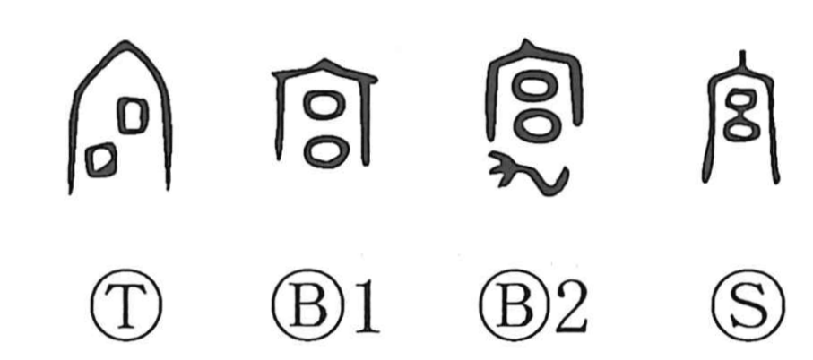

宮

Kun: miya | On: kyu, gu, ku
palace ・ shrine ・ residence ・ mausoleum
Explanation
宮 combines the roof radical with 呂, which originally sketched a plan of paired rooms front and back, evoking a sizeable roofed complex. In early usage it denoted the palace mausoleum—a sanctuary for venerating ancestral spirits. In some bronze-inscription forms a 九 sign is added; its sinuous, dragon-like shape marks the building as sacred and suggests a place for exorcistic rites. From this sacral precinct the sense broadened to the king’s residence (the royal palace) and, by extension, a dwelling or shrine.